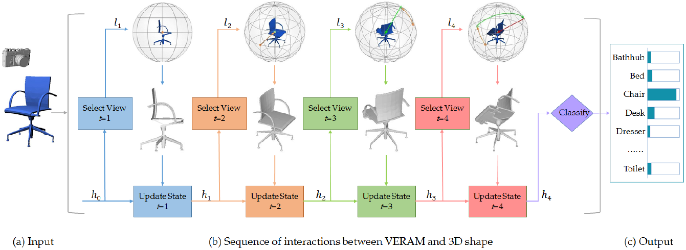

VERAM: View-Enhanced Recurrent Attention Model for 3D Shape Classification
(Kai Xu is the corresponding author.) 
Abstract: Multi-view deep neural network is perhaps the most successful approach in 3D shape classification. However, the fusion of multi-view features based on max or average pooling lacks a view selection mechanism, limiting its application in, e.g., multi-view active object recognition by a robot. This paper presents VERAM, a recurrent attention model capable of actively selecting a sequence of views for highly accurate 3D shape classification. VERAM addresses an important issue commonly found in existing attention-based models, i.e., the unbalanced training of the subnetworks corresponding to next view estimation and shape classification. The classification subnetwork is easily overfitted while the view estimation one is usually poorly trained, leading to a suboptimal classification performance. This is surmounted by three essential view-enhancement strategies: 1) enhancing the information flow of gradient backpropagation for the view estimation subnetwork, 2) devising a highly informative reward function for the reinforcement training of view estimation and 3) formulating a novel loss function that explicitly circumvents view duplication. Taking grayscale image as input and AlexNet as CNN architecture, VERAM with 9 views achieves instance-level and class-level accuracy of 95:5% and 95:3% on ModelNet10, 93:7% and 92:1% on ModelNet40, both are the state-of-the-art performance under the same number of views.
|